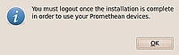
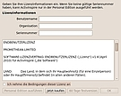
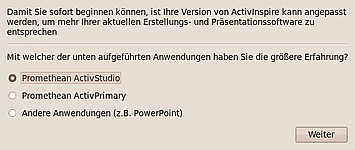
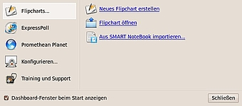
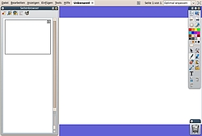

ActivInspire
Dieser Artikel wurde für die folgenden Ubuntu-Versionen getestet:
Ubuntu 14.04 Trusty Tahr
Zum Verständnis dieses Artikels sind folgende Seiten hilfreich:
Bei ActivInspire  handelt es sich um eine kommerzielle, plattformübergreifende Software für elektronische, interaktive Whiteboards (ActivBoard) des Herstellers Promethean. Sie funktioniert allerdings auch mit Hardware anderer Hersteller oder ohne.
handelt es sich um eine kommerzielle, plattformübergreifende Software für elektronische, interaktive Whiteboards (ActivBoard) des Herstellers Promethean. Sie funktioniert allerdings auch mit Hardware anderer Hersteller oder ohne.
Die Verwendung eines interaktiven Whiteboards ermöglicht ganz neue didaktische Methoden im Vergleich mit der traditionellen Kreidetafel. Wie bei einer Präsentation über einen Beamer wird immer ein Rechner benötigt, aber im direkten Vergleich gibt es Vorteile: während es beispielsweise beim Beamer u.U. schwierig ist, einen virtuellen Textmarker zur Hervorhebung zu benutzen, ermöglicht eine integrierte Spezialfunktion des Programms quasi das "Malen" auf dem Desktop oder auch in Anwendungsprogrammen. Allerdings wird ein spezieller Stift benötigt, mit dem das Whiteboard wie ein riesiges Grafiktablett funktioniert. Tafelbilder können gespeichert werden und lassen sich so beliebig oft - ähnlich wie bei einer Präsentation - wiedergeben.
Da ein interaktives Whiteboard viele Vorteile gegenüber einer herkömmlichen Kreidetafel bietet, sprechen manche auch bereits vom "Ende der Kreidezeit" – im 21. Jahrhundert... Ob die benötigten Ressourcen auch im 22. Jahrhundert noch ausreichen, um ein Whiteboard zu betreiben, bleibt abzuwarten. Genauso wie die Antwort auf die Frage, ob ein Whiteboard in der Praxis so robust und langlebig wie die klassische Kreidetafel ist.
Das Programm existierte in zwei Varianten:
"Personal Edition": kostenlose eingeschränkte Version für Schüler oder Trainings- bzw. Demo-Zwecke
"Professional Edition": kommerzielle Vollversion für Lehrkräfte, Dozenten, etc. (Lizenzschlüssel erforderlich)
Ab Version 1.5 wurde diese Trennung insofern aufgegeben, dass man nun die "Professional Edition" 60 Tage ohne Einschränkungen nutzen kann. Erst danach wird aus der "Professional Edition" automatisch eine "Personal Edition".
Es gibt einige freie Alternativen, die ActivInspire ähneln, aber nicht an den Funktionsumfang heranreichen – was nicht unbedingt ein Nachteil sein muss, wenn man nicht alle Funktionen benötigt:
Open-Sankoré - die wahrscheinlich umfangreichste Alternative
OpenBoard

 - Abspaltung (Fork) von Open-Sankoré
- Abspaltung (Fork) von Open-SankoréQuizdidaktik4Whiteboard - Nutzung interaktiver Whiteboards direkt in einem Webbrowser
Hinweis:
Dieser Artikel ist auf Basis der deutschen Version 1.4 für Ubuntu entstanden. Die Unterschiede zwischen den beiden Editionen sind in der Programmhilfe oder in den technischen Daten zu finden. Außerdem sollte man den Abschnitt Probleme und Lösungen am Ende des Artikels beachten.
Versionen¶
ActivInspire gibt es in verschiedenen Versionen. Offiziell wird neben anderen Linux-Distributionen bevorzugt die jeweilige LTS-Version von Ubuntu unterstützt. Die aktuellste Version ist derzeit nur für Windows und Mac OS X verfügbar (Stand: 04/2017).
Hinweis:
Momentan existiert nur eine Version für Ubuntu 14.04 Trusty Tahr. An einer Umstzung für Xenial Xerus wird momentan gearbeitet.
Installation¶

Voraussetzungen¶
Bei der Installation des ActivInspire-Metapakets (siehe unten) werden die notwendigen Kernelmodule (Treiber) für die ActivBoard-Hardware und den jeweils vorhandenen Kernel automatisch kompiliert. Dazu muss das folgende Paket installiert [1] werden:
build-essential
 mit apturl
mit apturl
Paketliste zum Kopieren:
sudo apt-get install build-essential
sudo aptitude install build-essential
Außerdem wird das Paket linux-headers passend zur eigenen Kernel-Version und -Architektur (-generic, -386, -generic-pae usw.) benötigt. Dieses Paket lässt sich über den folgenden Befehl installieren:
sudo apt-get install linux-headers-$(uname -r)
Fremdquelle¶
Die Fremdquelle enthält ausschließlich Versionen für 32-Bit-Systeme.
Um aus der Fremdquelle zu installieren, muss man die folgenden Paketquellen freischalten:
Hinweis!
Zusätzliche Fremdquellen können das System gefährden.
deb http://activsoftware.co.uk/linux/repos/ubuntu VERSION oss non-oss
Um die Fremdquelle zu authentifizieren, kann man
entweder den Signierungsschlüssel herunterladen  und in der Paketverwaltung hinzufügen oder folgenden Befehl ausführen:
und in der Paketverwaltung hinzufügen oder folgenden Befehl ausführen:
wget -q http://www.activsoftware.co.uk/linux/repos/Promethean.asc -O- | sudo apt-key add -
Alle Komponenten (Treiber, Werkzeuge, Handschrifterkennung, Vorlagen) werden mit dem Metapaket
activ-meta-de
installiert [1][2]. Dieses ist ca. 180 MB groß und besteht aus folgenden Einzelpaketen:

activdriver (Kernel- und X11-Module (Treiber) für das ActivBoard)
activinspire (Hauptprogramm)
activinspire-help-de (Programmhilfe)
activresources-core-de (Ressourcen wie fertige Tafelbilder, Vorlagen, Clipart etc.)
activhwr-de (Handschrifterkennung, nur in der "Professional Edition")
activtools (enthält die Programme
activmanager,activcalibrate,activremoteundactivmonitor; werden für die "Personal Edition" und die Nutzung ohne ActivBoard nicht benötigt)activaid (Systeminformationen für den Support)
recordmydesktop (von ActivInspire unabhängiger ScreenCast-Recorder)
Experten-Info:
Evtl. reicht es für die "Personal Edition" aus, nur die Einzelpakete activdriver, activinspire, activinspire-help-de und activresources-core-de zu installieren. Dies wurde nicht getestet. Für die Installation auf einem 64-Bit System siehe unten.
Ist die Installation abgeschlossen, wird man aufgefordert, sich ab- und neu anzumelden.
64-Bit¶
Ubuntu 14.04¶
Bei Ubuntu 14.04 ist das Paket ia32-libs nicht mehr vorhanden. Stattdessen installiert man explizit die Unterstützung für 32-bit, dann drei abhängige Bibliotheken und zum Schluss die 32-bit-Version:
sudo apt-get install multiarch-support sudo apt-get install libssl0.9.8:i386 libpulse-mainloop-glib0:i386 libxmu6:i386 sudo apt-get install activinspire:i386
Experten-Info:
Ob der USB-Treiber für das ActiveBoard bei 64-bit-Systemen funktioniert, wurde nicht getestet.
Bedienung¶
Eine Beschreibung dieser umfangreichen Software ist nicht ganz einfach und muss sich daher auf das wesentlichen Grundfunktionen beschränken. Auch auf konkrete Hinweise im Zusammenspiel mit verschiedenen Whiteboards (Hardware) wird hier verzichtet.
Prinzipiell besitzt ein interaktives Whiteboard einen Beamer, der weiterhin wie üblich genutzt werden kann. Um ein Whiteboard von Promethean wie einen Tafelersatz zu nutzen, werden a) ein spezieller Stift (ActivPen) und b) eine geeignete Software (ActivInspire; inkl. der notwendigen Treiber für die verwendete Hardware) benötigt. Dann ist es möglich, direkt auf das Whiteboard zu schreiben. In der Praxis reicht das für viele Benutzer und Zwecke bereits aus. ActivInspire bietet aber zusätzliche Funktionen wie zum Beispiel einen "Tafeldienst", der viel schneller und "trockener" als ein herkömmlicher arbeitet.
Experten-Info:
Neben Tastatur und Maus kann man zusätzlich ein Grafiktablett nutzen. So kann man auch zu Hause die Funktionen ausprobieren, die sonst schwer möglich sind (z.B. das Freihandschreiben mit der Maus).
Nach der Installation finden sich auf dem Desktop zwei neue Symbole: "ActivInspire" und "ActivInspire (Turn Off Desktop Effects)". Das Programm kann aber auch über die beiden Menüpunkte "Anwendungen -> Bildung -> ActivInspire" und "Anwendungen -> Bildung -> ActivInspire (Turn Off Desktop Effects)" gestartet werden. Aktive Desktop-Effekte wie Fensterschatten oder Transparenz können dafür sorgen, dass ActivInspire mit einem leeren, grauen Bildschirm startet. Dann muss man das Programmfenster wiederherstellen (auf Fenstergröße umschalten (mittlere Schaltfläche) und dann wieder maximieren) oder besser gleich auf Desktop-Effekte verzichten.
 Beim ersten Programmstart hat man die Auswahl, eine 60-Tage-Demoversion der "Professional Edition", die zeitlich unbegrenzte "Personal Edition" oder – bei Eingabe eines Lizenz-Schlüssels – die ebenfalls zeitlich unbegrenzte "Professional Edition" zu nutzen. Als vierte Möglichkeit wird der Kauf angeboten.
Für die "Personal Edition" reicht es aus, wenn man die Lizenzbedingungen akzeptiert und mit "Ok" bestätigt. Unter Umständen wird die Eingabe eines Namens und einer Organisation verlangt, die man frei wählen darf.
Danach öffnen sich beim ersten Programmstart zwei weitere Fenster. Zum einem werden hier die Vorkenntnisse abgefragt (im Zweifelsfall die Standardeinstellung übernehmen) und zum anderen ein sog. "Dashboard" angezeigt (evtl. hinter dem Hauptfenster). Da man die Funktionen des Dashboard auch über die entsprechenden Menüpunkte erreicht, kann man es ebenfalls gefahrlos schließen.
|  |
| Willkommen |
|  |
| Dashboard |
Grundsätzlich verhält sich das Programm wie die Präsentationsprogramme PowerPoint oder Impress: ein Tafelbild entspricht einer Folie (Flipchart) und kann weitere Objekte enthalten (Bilder, Clipart, Audio- und Video-Elemente). Allerdings wird handschriftlicher Text (Annotation) konzeptionell anders behandelt als ein eingefügtes Bild. Insgesamt werden pro Tafelbild vier Ebenen unterstützt, um z.B. einen Hintergrund sauber von Objekten im Vordergrund zu trennen. Alle Tafelbilder können gespeichert werden – mehrere Tafelbilder in einer Datei sind problemlos möglich. Leider wird zum Speichern ein proprietäres, nicht offen gelegtes Format (.flipchart) benutzt. Damit können diese "Flipcharts" nur mit ActivInspire wieder geöffnet werden.

Der Nutzer wird bei der Erstellung eines Tafelbilds auf Wunsch von diversen Funktionen unterstützt. Da wären beispielsweise einfache Hilfen wie
verschiedene Farben für den Stift
die Möglichkeit, die Strichstärke (-dicke) des Stifts zu beeinflussen
ein Textmarker
ein Radierer
oder ein Lineal
Komfortfunktionen wie Zeichenwerkzeuge sorgen dafür, dass Linien gerade und Kreise auch rund werden. Eine integrierte Handschrifterkennung kann geschriebenen Text automatisch in Druckbuchstaben umwandeln (was wortweise prima funktioniert, aber bei Sätzen problematisch werden kann). Beide Funktionen sind aber nur in der "Professional Edition" enthalten. Dafür lassen sich in allen Versionen Audio- und Videodateien sowie Hyperlinks einbinden und bei Mausklick abspielen bzw. aufrufen.
Ein weitere, bestechende Eigenschaft nennt sich "Desktop Annotate". Hierbei wird das Programm komplett unsichtbar bzw. transparent – mit dem Effekt, dass der darunterliegende Desktop oder Programm sichtbar wird und ganz normal genutzt werden kann. Auf Knopfdruck kann der komplette Bildschirm importiert werden, um Bereiche hervorzuheben oder handschriftlich zu kommentieren. Leider gibt es bei dieser Funktion unter Linux teilweise Probleme.
Benutzerprofile¶
Aufgrund der vielfältigen Konfigurationsmöglichkeiten lassen sich diese als Profil zusammengefasst speichern und so bequem wieder aufrufen. Diese Funktion steht in der "Personal Edition" nicht zur Verfügung.
Import¶
Bestehende PowerPoint-Präsentationen, SMART Notebook- and SMART Galerie-Dateien können immer importiert werden, PDF-Dateien nur mit der "Professional Edition. Es ist aber möglich, mit der Kamera-Funktion Bildschirmphotos (Screenshots) des Desktops oder anderer Programme zu erstellen und direkt in das eigene Tafelbild zu übernehmen.
Experten-Info:
Beim SmartBoard und der dazugehörigen Software "SMART Notebook" handelt es sich technisch gleichwertiges und ebenfalls weitverbreitetes Konkurrenzprodukt.
Export¶
Unter Linux zwar schon im System enthalten und nichts besonderes, aber für Windows-Nutzer praktisch: ein PDF-Drucker wird mitinstalliert. Diese Exportmöglichkeit speichert aber immer ein (Tafel-)Bild ab - (nach Text) durchsuchbare PDF-Dateien sind nicht möglich.
Problembehebung¶
Desktop Annotate¶
Eine der sehr praktischen Funktionen des Programms, der Import des aktuellen Bildschirminhalts, funktioniert aufgrund von Transparenzproblemen unter Linux nur teilweise: die Menüleiste/n (Panels) am oberen und/oder unteren Bildschirmrand fehlen (bestätigt für GNOME, KDE und LXDE). Über den Umweg eines manuellen Bildschirmphotos (Screenshot) oder Ausschnitts, der in ActivInspire importiert werden kann, lässt sich dieses Manko teilweise ausgleichen.
Flash¶
Die Linux-Version unterstützt kein Adobe Flash.
Hilfe¶
Die Hilfefunktion mit F1 nutzt den installierten Webbrowser. Leider werden nicht alle Browser unterstützt, z.B. funktioniert Chromium bzw. Google Chrome mit Version 1.4 von ActivInspire nicht. Um die Hilfe manuell zu öffnen, lädt man die Datei /usr/local/bin/activsoftware/help/de/help_de.htm mit einem anderen Webbrowser.
Sonstiges¶
Viele deutsche Schulen verfügen über eine Campus-Lizenz, mit der – zumindest für Lehrkräfte – die kostenlose "Personal Edition" in eine "Professional Edition" umgewandelt werden kann.
Speziell Mathematik-Lehrer fragen immer wieder nach Formel-Werkzeugen (Formel-Editor) und vorgefertigten Tabellen. Erstere sind erst ab der Version 1.6 vorhanden, letztere können über die Ressourcen (als Vorlage) eingefügt werden.
Deinstallation¶
Die Deinstallation der Version 1.4 kann sich lt. unbestätigten Berichten unter Umständen schwieriger als gedacht erwiesen. Ursache sind die bei der Installation über das Metapaket automatisch erstellten Kernelmodule für das ActivBoard, die bei einer Deinstallation über die Paketverwaltung nicht entfernt werden.
Teilweise umgehen ließe sich das Problem, in dem man nicht das Metapaket, sondern nur die benötigten Einzelpakete installiert. Dies führt zwar zu einem Funktionsverlust, aber wer zuhause nur den Unterricht vorbereiten möchte und die Ergebnisse auf einem externen Datenträger mitnimmt, braucht keine Steuerung für das ActivBoard.
Das Programm speichert seine Konfigurationsdaten im Ordner ~/.config/Promethean. Dieser Ordner muss manuell entfernt werden, wenn man das Programm deinstalliert, genauso wie ~/Documents/Activ Software oder ~/Dokumente/Activ Software.
Links¶
Promethean Knowledge Base
- Support, FAQ, Forum etc.Active Inspire und Linux (Ubuntu bzw. Mint)
- Forumsbeitrag, 10/2016ActivInspire unter Ubuntu erfolgreich installieren
- Blogbeitrag, 06/2014Interaktive Whiteboards
- im ZUM-Wiki
- Erstellt mit Inyoka
-
 2004 – 2017 ubuntuusers.de • Einige Rechte vorbehalten
2004 – 2017 ubuntuusers.de • Einige Rechte vorbehalten
Lizenz • Kontakt • Datenschutz • Impressum • Serverstatus -
Serverhousing gespendet von